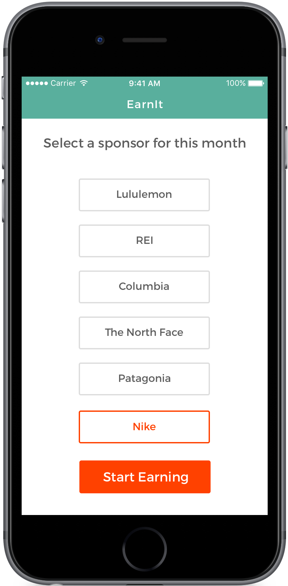
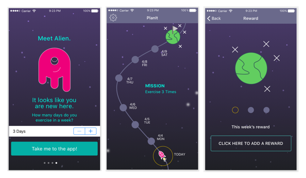

Client:DESIGNATION
Date:April 15, 2016
Role:User Research, IxD, & Visual Design
For this mock project, my team of three was tasked with creating a digital product that reimagines how people adopt and maintain a healthy lifestyle. During three one-week UX sprints and three one-week UI sprints, we designed a system that encourages users to retool their existing activity as exercise through an external reward system.

Exploration
Finding a forest amongst the trees
We explored trends in the fitness, food, and health industries through secondary domain research, surveys, and user interviews. We asked people to define health and fitness, discuss their exercise and eating routines, and share recent experiences related to health and fitness. Many discussed how lack of time prevented them from meeting their health goals.
“Time has always been my biggest obstacle. It’s hard to fit in gym-time when I’m working—you know—14-hour days.” – Interviewee
Getting to know Sarah
We employed personas to model behavioral and attitudinal trends. Sarah, our primary persona, wants to exercise more throughout the week. She hikes on weekends, but her weekdays are too busy to fit in exercise. Sarah was our litmus test for design concoctions to ensure that our process was user-centric.
Our Vision
Time is of the Essence
Sarah also helped us personalize the core problem.
Sarah believes she is unable to take care of her physical well-being because she does not have enough time to exercise.
People were not finding time in their busy schedules to exercise more. Our survey indicated that people use exercise as their primary form of stress relief, but are dissatisfied with their current level of fitness.
I identified two key assumptions underlie Sarah’s problem:
- She doesn’t have time in her schedule to exercise.
- Exercise is time-intensive.
How to build
As we ideated ways to solve the core problem, we envisioned how it would accomplish this by defining a few must be's.
Our solution must be:- Straightforward: Simplify choices and strive for clear language.
- Warm: Provide encouragement and convey trustworthiness.
- Delightful: Make unexpected joy the norm.
- Time-efficient: Offer quick and easy solutions.
- Harmonious: integrate seamlessly into daily life.
We new that How can we help people be more active without giving them more tasks?
Where We Landed
EarnIt is an mobile application that rewards you for moving more. Select a sponsor at the beginning of the month and earn a $1 credit for every day that you move the equivalent of 10,000-steps. Use EarnIt to redeem your credit in-store or online.

Everyone goes pro
Choose from a list of premium brand sponsors for your store credit—brands like Nike, Adidas, Patagonia, The North Face, and Columbia.
Device Agnostic
Pair EarnIt with almost any wearable or track your steps with your smartphone’s native accelerometer.
Celebrate
Reach 10,000 steps each day and celebrate every dollar you earn with a little confetti.
Redeem with your phone
Review your earnings and spend digital gift cards in-store or online.
Our Journey
The path to our latest iteration taught me a lot about iterative process. Inside a six-week timeline, we spent five weeks developing an solution that failed user testing and one week pivoting to a new concept solution. In order to meet our deadline with a solution, we had to be decisive.
Navigating a Concept Sea
With our research in hand and a problem defined, we brainstormed a few concepts.
Early...
Using sketching, we employed early user testing to evaluate the clarity and desirability of our initial concepts.
- Clarity: Does the concept have a clear and cohesive function?
- Desirability: Does the concept align with user goals?
We put low-fidelity mockups in front of target users and asked people to express reactions to what their seeing. Based on trends across six interviews, we noticed the strongest affinity for FitAssist. Users integrate FitAssist with their digital calendars to help them schedule exercise into their week. By accessing the user's schedule, FitAssist identifies unscheduled blocks of time as opportunities for exercise and prompts the user to plan workouts. Paired with self-generated rewards, weekly goal-setting turns health and fitness goals into action.
“Every Sunday, I think about exercising more; I've got a membership, but I convince myself out of going regularly; just thinking about it isn't enough to get me to the gym.” – Interviewee
...and Often
For the purposes of learning Axure, we were tasked with building mid-fidelity prototypes for each concept solution, no matter how it performed during concept testing. Each teammember therefore created a mid-fidelity prototype in Axure for his/her respective concept. However, because of a lack of time, we immediately rushed into building high-fidelity compositions for FitAssist without testing the Axure prototype. Retrospectively, I would have tested the prototype at this stage because it might have saved us a lot of time that was spent on an unworkable concept.
Link to FitAssist Axure prototypePrototype for MyGrow—a concept solution designed separately by me:
Link to MyGrow Axure prototype


PlanIt
Gamify
We explored various UI styles, but decided to move forward with the UI concept that we initially felt best reflected our design principles. To visually link goal-achievement to rewards, we converged on a space travel theme that modeled the user's progress toward his/her goal. Testers found the experience “fun and delightful,” but were unsure if it would motivate them to exercise regularly. Additionally, PlanIt required extensive user-input, which is both time-consuming and cognitively burdensome. This confirmed that we needed to rethink the underlying concept of self-generated goals and rewards.
The Problem with User Testing
Late-stage user testing revealed desirability issues that had not come up during low-fidelity prototype testing. Testers struggled to create rewards and felt that the app was no more useful than their personal calendar. Additionally, many were not confident that they'd be able to withold rewards. Why wasn't this revealed in earlier concept testing?
In early testing, we asked people to look at paper prototypes and imagine themselves using the app; I believe that when people test lower-fidelity sketches, they imagine what they would consider their best version of the app. Additionally, they typically assume their best behaviors related to the app, therefore their reactions tend to be markedly positive.
One solution to this problem is to ask different questions. For example, in low-fidelity testing, we asked testers to imagine scheduling activities for the week, but didn't ask them to explicitly share those activities aloud. Had we encouraged them to share them aloud, they might have hesitated or shown more uncertainty about the cost and benefits of using the app.
Is Self-Rewarding Actually Rewarding?
Leveraging self-reward is challenging because while it offers choice, it also creates the burden of decision-making.
I perused academic journal databases to develop my understanding of the psychology behind self-reward. While self-rewarding can be effective when paired with simple goals, it is generally less effective when paired with goals and associated activities that already require a large amount of self-control. Choosing to exercise over watching an episode on Netflix is challenging for some. Add the burden of withholding your own end-of-week reward and suddenly the whole experience feels onerous.
Given these major challenges with the core concept, we decided to pivot.
The Pivot
Brand-sponsorship
Since self-generated rewards were too burdensome for our users, we came up with a new goal and reward system. We knew that earning or saving money had been shown to be an effective motivator, but offering cash to users was unfeasible. We settled on brand-sponsorship as our motivating incentive by offering gift-cards from user-selected brands as rewards. On the sponsor-side, supporting user participation financially could increase brand-awareness, strengthen brand-loyalty, and improve brand-image.
Using an external reward system forced us to shift to a standardized goal system. We decided to adopt the 10,000-step model, which is both familiar and a simple strategy for increasing the frequency of physical activity inside a busy schedule. While major brands primarily use social-competition, monetary-reward systems are absent in the general fitness market; such systems are only available through employee health programs.
Paradigm Shift
Pivoting to the 10,000-step model solves Sarah's lack-of-time problem in a new way. Recall Sarah's two assumptions:
- She doesn’t have time in her schedule to exercise.
- Exercise is time-intensive.
Both FitAssist and PlanIt were attempts to tackle the first assumption by revealing opportunities in her schedule to exercise, but they required too much user input. EarnIt addresses the second assumption by framing walking as exercise and by motivating her with external rewards.

It was all a dream
Did we innovate?
The benefits of engaging in a project with no stakeholder restrictions is that it allowed us to explore a wide breadth of possibilities. Although elements of our solution are not individually new—the 10,000-step model, afterall, has existed for decades—we believe the combination of elements are innovative.
The look and feel
Finding a visual design that fit our target user and design principles took a few iterations. The latest version uses white space to draw the users eye to key information that is bucketed via cards.The soft green is inviting, while the orange provides a pop of color to callout key data. The circle visualization supports the information that users most often view—the step-count.
Some lessons I learned
-
Problem first. It was tempting to search for the solution during exploratory user interviews or to ask users for the solution. But if you start searching for solutions before clearly defining the problem, you're unlikely to help anyone.
-
Test early and often. Ideal testing involves users that match your user profile, but testing with anybody can help reveal usability issues quickly.
-
Quadruple diamond. One round of exploring the problem space and then one round of brainstorming is probably not enough. We completed two full rounds of exploratory research and three distinct brainstorming sprints.